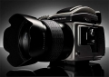

H3D装备了新型数字引擎，能够提供更清晰的影象。拍摄时，镜头参数和拍摄条件会输入到数字引擎中，然后根据这些参数，配合镜头的设计和感光器件的光学性能，对AF系统进行精细的微调，从而获得非常清晰的 Ultra-Focus 影象。配合数字APO校正(DAC，对影象的色散和畸变进行矫正)，从而提高了HC系列镜头清晰度。
成像质量优秀，画质细腻、层次分明，色彩还原极佳。常用相机设定菜单简洁，操作简便，镜头涵盖28mm-300mm（包含两款变焦），是风光摄影和商业摄影的利器。尤其是加用1.5移轴摇摆转接器后可大大扩展建筑摄影和商业摄影的范围。
操作简单，画质细腻、成像极佳，在中、大画幅相机中便携性较好。
1、手柄电池在冬季耐用性较差。 2、数码后背散热虽然较早期型号有所改善，但在夏季拍摄时仍然会出现温度过高而罢工现象。